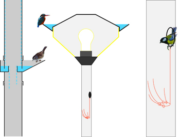

From Your Window
Assignment: Animals in the city. The assignment was to find a way to improve the contact of people and animals in the city. Our team chose to
focus on small adaptations to the existing city to improve the life of animals around the house.
We came up with a number of different adaptations such as a dent in the grill that supports wall climbing plants to create a hollow for birds to
live in and a ridge on roof tiles for nesting.
The ideas I developed were a gutter on the standard ’Friso Cramer’ streetlight, to provide drinking water in winter. A small hook with a number
of spokes on the other that can be places in the inside the hollow street poles or lights, to create a nesting place. And a addition to the
standard rain pipe that creates a watering place for birds.
We presented the project as a scene from the 1st floor living room window to emphasise the contact these adaptations.